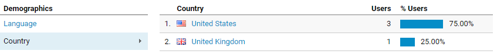

Google Analytics results
We're in business, baby!
I've been checking my Google Analytics page every day since I added it to my site. It looked like it's been working. However, I only had 2 users for a while, and that was kind of boring because that was just my home computer and my work computer. Then I got a third user! But it was also in Washington DC, so I wasn't sure if that was my friend, or if it just caught me again using a different browser or my phone. But then, the craziest thing happened...
A person is viewing this blog from the UK! Two things about this excite me — not only do I know this isn't me getting tracked some 4th way, but I also know it isn't any of my friends! That means someone stumbled onto my site organically! Before I have even done anything for SEO!
You can tell I'm pumped about this.
Anyway, I've been enjoying viewing the stats. I still haven't watched any videos or looked up any tutorials, so I still don't know what I am looking at for the most part. Like, there's a stat for "bounce rate." I have a vague understanding of what a bounce rate is, but I don't know how it's actually calculated or what it even means for my site.
I did learn that I don't need Google Tag Manager to get basic analytics from my site. I still don't know why nothing was showing up until I added it, but I have since stopped adding the Google Tag script to my newer posts and I've still been seeing page view data. Looks like I can remove that and simplify my pages a bit.
I've also been playing around with Netlify for a couple weeks, so I added a new property to my analytics account to track that site separately. There is a feature on Netlify that allows you to inject a script onto all your pages, I believe at deploy time. This would allow me to add the Google Analytics snippet to every single page with a few clicks, saving me from manually adding the script to 2 months' worth of posts. I'll see how it works out, and if it's good, maybe switch to Netlify as my hosting provider. It seems pretty cool so far.